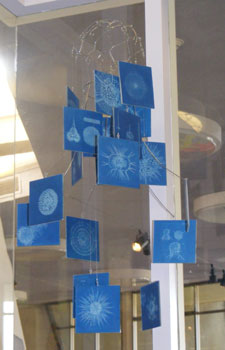
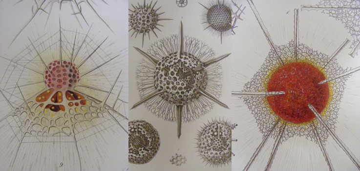
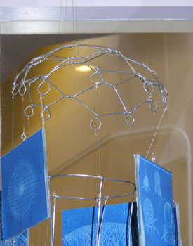
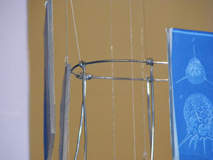
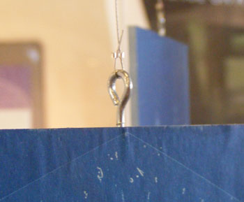
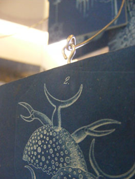
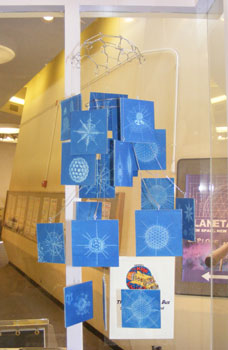

Time: a few days
What you need:
-Approximately 15’ of 14 gauge stainless steel wire
-2 pairs of needle-nosed pliers
– Wire cutters
-19 pieces of 4×4” acrylic
-19 screw eyes, ½”
– 4-6’ stainless steel nylon coated beading wire
– 45 silver crimp beads
-38 pieces of 4×4” Sunprint paper
-38 images
-transparency paper (about 8 pieces, or enough to fit your images on)
-access to a scanner/copier and printer
-Spray adhesive
-Mod Podge (matte)
-Paint brush
-Soldering iron and solder
Ernst Haeckel (1834-1919) was an “eminent German biologist, naturalist, philosopher, physician, professor, and artist who discovered, described and named thousands of new species, mapped a genealogical tree relating all life forms, and coined many terms in biology, including phylum, phylogeny, ecology, and the kingdom Protista. Haeckel promoted and popularized Charles Darwin’s work in Germany…and his published artwork includes over 100 detailed, multi-color illustrations of animals and sea creatures.” The stunning drawings from his 1862 Monograph on Radiolarians have inspired everything from lamps to large scale architecture, and we decided to use them to make a mobile. The wire structure is modeled off Haeckel’s work on jellyfish, and the mobile features Sunprints of the drawings in the monograph.

The initial structure is made in two parts. For the top part, we created a rounded netting of diamonds out of the steel wire (modeled off chicken wire) with loops along the bottom. Then we made a smaller wire circle and attached long “tentacles.” We later soldered these on along the ring, so that they’d stay in place.


Since there were 19 loops, we made 38 Sunprints of our favorite Haeckel drawings, by photocopying them onto transparency sheets and cutting them apart. While these were pressing and developing, we drilled holes into the tops of 19 pieces of acrylic, and screwed in the eyelets. We then glued the Sunprint images onto the acrylics, with one on each side, using spray glue for the initial attachment, and then using a brush to apply Mod Podge on the corners to ensure that they did not curl up. To attach the acrylics with the images to the wire structure, we used varying lengths of beading wire secured with crimp beads,

or attached the eyelets directly to the frame.

Once the Sunprint acrylics were hung on both the netting-like piece and the ring with tentacles, we hung the ring from three points off the loops of the netting with beading wire and crimp beads. To hang the mobile, we looped beading wire around the top of the netting piece and secured it with a crimp bead.

Sources:
Art Forms from the Ocean: The Radiolarian Atlas of 1862 (Ernst Haeckel); Available for purchase from the Discovery Corner Store at the Lawrence Hall of Science
“Ernst Haeckel” http://en.wikipedia.org/wiki/Ernst_Haeckel
{kind=link}
{kind=link}
{kind=link}
{kind=link}
{kind=link}
{kind=link}
{kind=link}
Tags: Art, Scientists